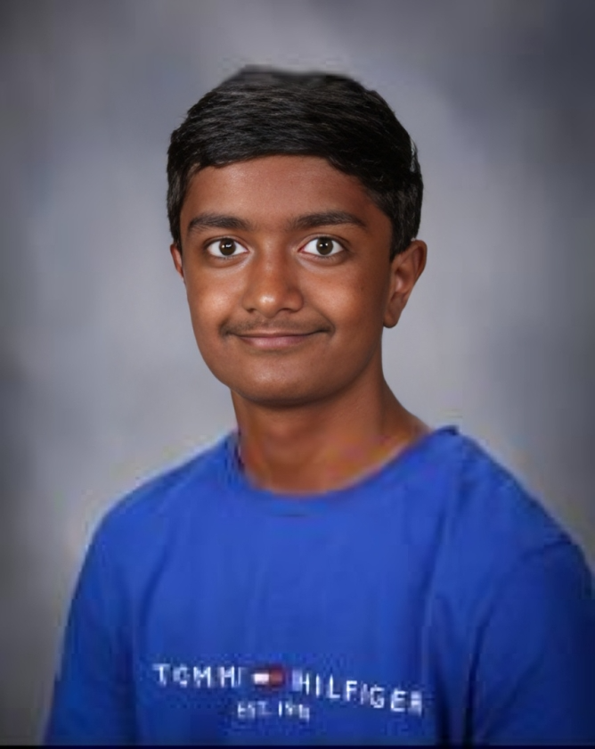

|
Doctor, Engineer, Construction Worker, Dentist, or Pharmacist? So many interesting and fun jobs to choose from; so why did I choose to become a software engineer? Well, I enjoy the subject of math and solving calculus type problems. With this as a hobby, I found an interest in computer science because it is mainly focused on applying many methods to solve real-life problems. My plan to achieve my dream of becoming a software engineer is to practice coding as a hobby and make it something I will do regularly and on my own rather than something that I am forced to do. This will get me more exposed to coding and help me develop a greater passion for it. My main strength is math. Before I even started going to school, my parents had taught me addition and subraction. With this early exposure to math, I was able to get ahead of most students in math. I was able to learn and master concepts such as multiplication and division in first grade itself. Through extra-cirricular classes and the support of my parents, I am currently learning Pre-Calculus and Trigonometry in 9th grade. Now, my personality: I am an ongoing and energetic teen that enjoys exploring new and different things. Since we have only recently finished the first semester of school, I haven't accomplishmed much yet. However, I am planning to join more clubs and consider creating one myself. I am planning to get at least 20 volunteer hours this year by doing fundraisers and certain projects to help our society as a whole. Outside of school, I am enrolled in extra-cirricular classes that focus mainly on the subjects of Math and English. I am also an active member of a Debate Club that was recommended to me by my English Tutor. In school, I am part of the Chess Club, A.I. Club, and I am currently enrolling for two more. From projects, presentations, and activities in schoool, I have discovered that I am a great team player (I work well with others).
|

Five Adjectives to Describe Me: Energetic, Friendly, Honest, Humorous, Intelligent
Clubs I am a part of: A.I Club, Hackathon Club, Red Cross Club, Reading Club, Chess Club
Career: Software Engineer / App Developer / Buisness
|